Schritt für Schritt mit Bildern, wie bei Lego. Bei jedem Schritt steht, welche Teile und welche Schrauben du brauchst. Die Schrauben sind in Originalgröße gezeichnet, du kannst sie also direkt auf das Papier legen und vergleichen.
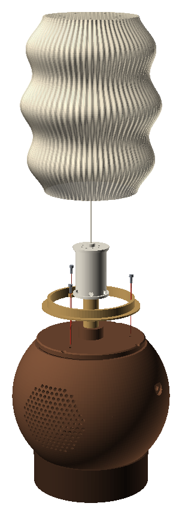
Alle Schrauben mit Zylinderkopf (ISO 7380 oder DIN 912), wenn nicht anders angegeben. Die Bilder sind 1:1, wenn du das PDF in 100 % druckst.
| Teil | Kugel | Zylinder | Wofür | |
|---|---|---|---|---|
| Gewindeeinsatz M3 (Heat-Set, ca. 5 mm lang, Ø 4,5–5 mm) | 20 (+3) | 18 (+3) | in alle Schraubstellen im Kunststoff | |
| M3 × 10 | 8 | 8 | Breitbänder und Passivmembran | |
| M3 × 8 | 8 (+3) | 10 (+3) | Kugel: Schale auf Sockel, Bodenplatte. Zylinder: Zwischenboden, Bodenplatte. (+3: Schirmsitz) | |
| M3 × 16 Senkkopf (DIN 7991) | 4 | – | Deckel der Kugel | |
| Abstandsbolzen M2,5 × 11 (Innen-/Außengewinde) | 4 | 4 | DigiAMP+ auf dem Pi | |
| M2,5 × 6 | 6 | 6 | 4 × DigiAMP+ oben, 2 × LM2596 |
(+3) nur bei den Kugelschirmen Kolben, Twist und Laterne, für den Schirmsitz.
| Schirm | Kugel | Zylinder | gedruckt statt Messing |
|---|---|---|---|
| Plissee, Glocke | 122 mm | 150 mm | Kugel kugel_stem.stl, Zylinder stem.stl |
| Kolben, Twist, Laterne | 60 mm | 60 mm | stem_short.stl |
Messingrohr Ø 20 mm außen, mindestens 13 mm innen (das LED-Kabel läuft durch). Die Länge ist das ganze Rohr, davon stecken 4 mm im Deckel. Gerade absägen und entgraten.
| Werkzeug | Lötkolben (mit Spitze für die Einsätze, ca. 220 °C), Inbus 2 und 2,5, Kreuzschlitz, Multimeter |
| Dichten | Moosgummi-Dichtband 3 mm (Lautsprecherflansche, Deckel, Schale/Sockel), Silikon (Kabeldurchführungen) |
| Dämmen | Polyesterwatte ca. 30 g, optional Alubutyl-Reste |
| Füße | 3 Gummifüße Ø 12 mm, selbstklebend |
| Druckteile | Welche STL du brauchst, steht im Gehäuse-README unter „Was muss ich drucken?“ |
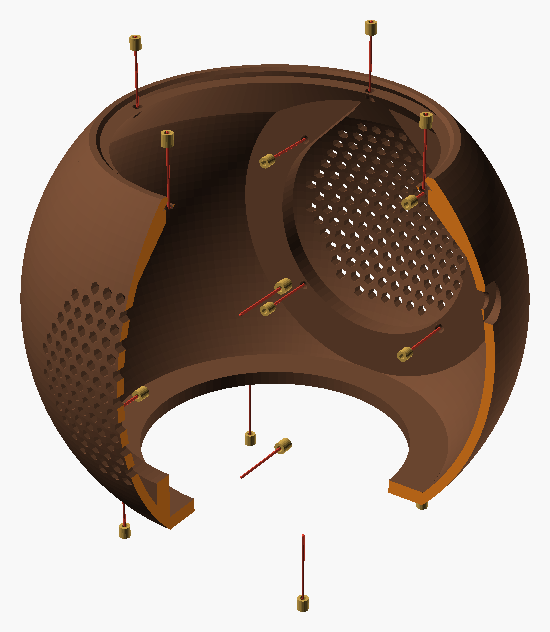
kugel_sphere_shellMit dem Lötkolben einschmelzen, gerade halten, bündig drücken. In die Schale kommen:
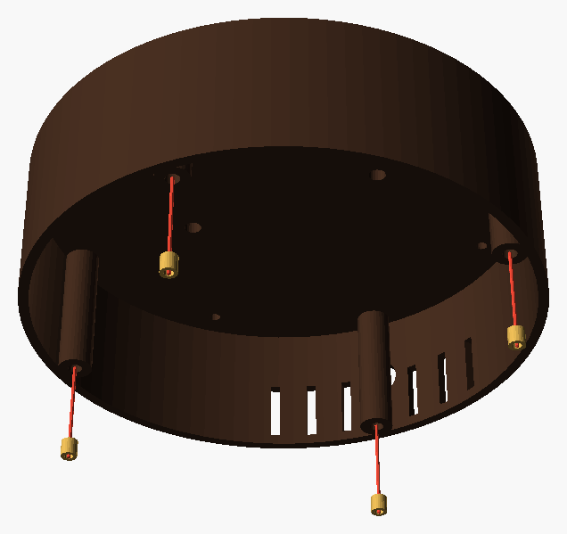
kugel_plinthSockel umdrehen und die 4 Einsätze von unten in die Dome setzen. Hier wird später die Bodenplatte angeschraubt.
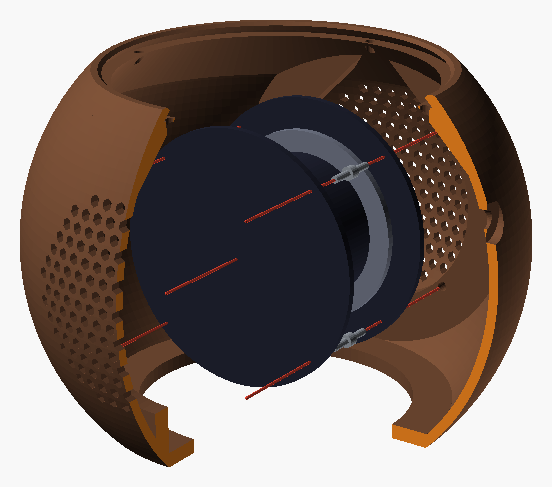
Moosgummi auf die Flansche kleben. Den Breitbänder vorne (Seite mit dem Lochfeld, Knopf rechts) von innen auf die Schallwand legen, die Passivmembran hinten. Je 4 Schrauben über Kreuz anziehen.
Vorher 2 Kabel (ca. 30 cm) an den Breitbänder löten, rot = +.
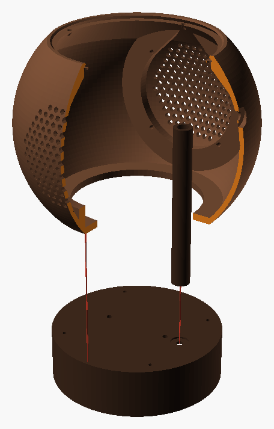
kugel_sphere_conduit, MoosgummiKabelrohr in die Vertiefung im Sockel stecken. Lautsprecherkabel durch eines der 2 kleinen Löcher nach unten fädeln. Moosgummi-Ring auf den Sockel, Schale aufsetzen (Lochfeld nach vorne) und von unten aus dem Sockel mit 4 Schrauben festziehen.
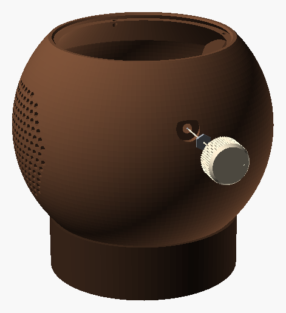
knobDrehgeber von innen durch das Loch rechts stecken, Mutter außen auf der flachen Stelle anziehen, Gewinde mit etwas Silikon dichten. 5 Litzen anlöten und mit dem Lautsprecherkabel nach unten führen. Knopf aufstecken (D-Welle).
Jetzt Polyesterwatte locker in die Kugel legen. Breitbänder und Membran frei lassen.
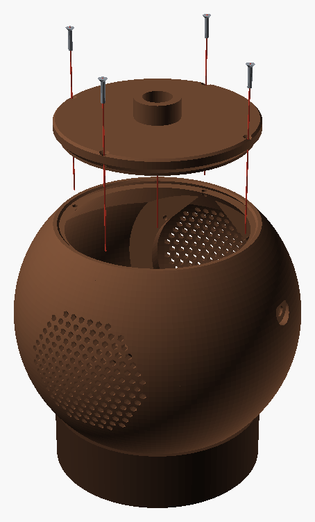
kugel_sphere_lid (je nach Schirm _kolben, _twist, _laterne), MoosgummiEinen Draht als Zugband von oben durch das Loch im Deckel und das Kabelrohr schieben, damit holst du später das LED-Kabel durch. Moosgummi auf den Absatz, Deckel einsetzen (Loch über dem Kabelrohr) und mit 4 Senkkopfschrauben festziehen.
top_lid mit Dichtband einsetzen, er wird nicht geschraubt. 2–3 Tupfen Silikon halten ihn und er lässt sich später noch lösen.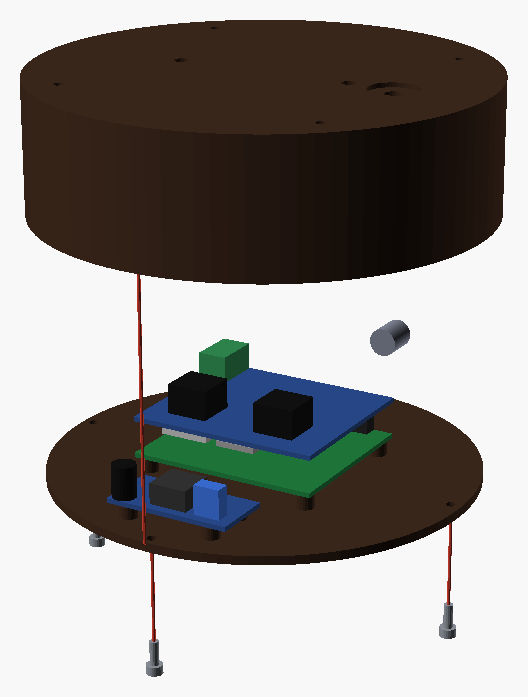
kugel_plinth_plate, Pi 3 A+, DigiAMP+, LM2596, DC-Buchse, 3 Gummifüßebottom_plate. Der LM2596 sitzt dort weiter vorne.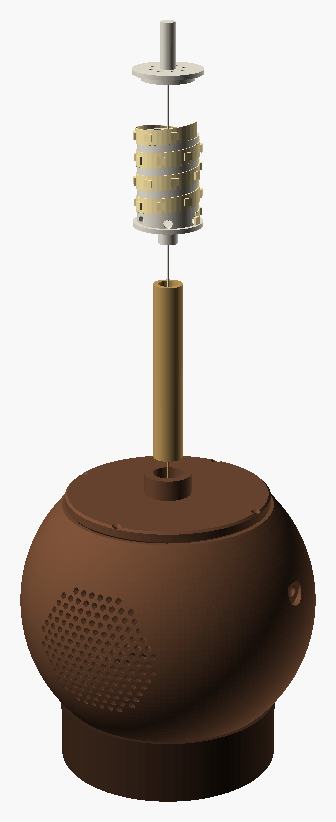
led_core, Kerndeckel, LED-Strip 0,5 mLED-Kabel mit dem Zugband von unten durch Kabelrohr, Deckel und Stiel ziehen. Stiel in den Deckel stecken. Strip spiralförmig um den Kern kleben (4 Windungen), anlöten: rot +5V, schwarz GND, blau DIN. Kern auf den Stiel, Kerndeckel drauf.
| Schirm | Kerndeckel |
|---|---|
| Plissee / Glocke | core_cap_plissee / core_cap_glocke |
| Kolben, Twist, Laterne | core_cap_globe |
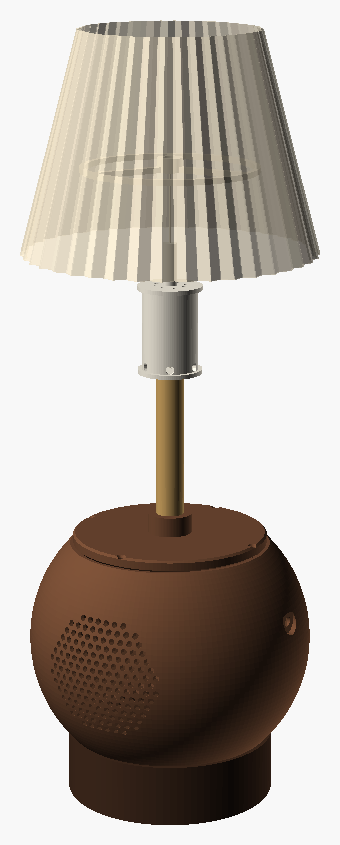
spider_plissee / spider_glocke, SchirmSpinne auf den Stift des Kerndeckels stecken, Schirm von oben darüberstülpen. Er liegt auf dem Ring der Spinne. Keine Schrauben.
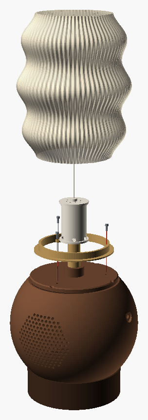
globe_seat_<schirm>, SchirmSchirmsitz auf den Deckel legen, mit 3 Schrauben in die Einsätze schrauben. Schirm (Deckel mit Lüftungslöchern oben) über den Kragen stülpen. Zum Fixieren reicht Silikon-Klebeband innen am Kragen.